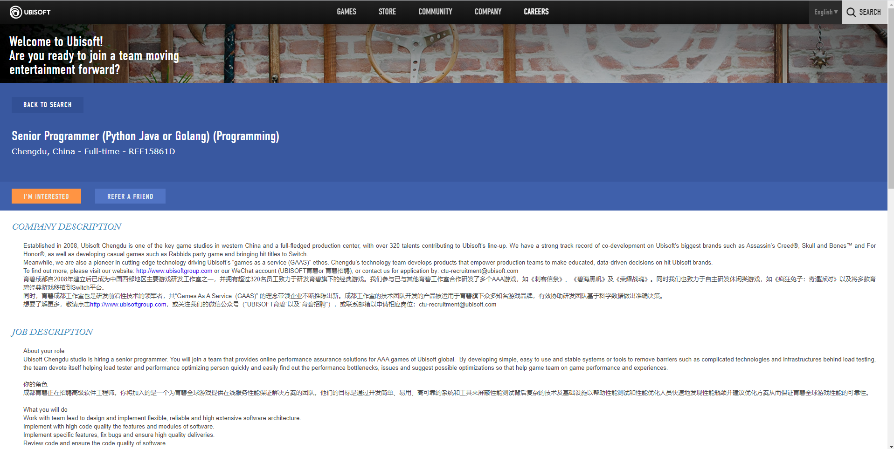
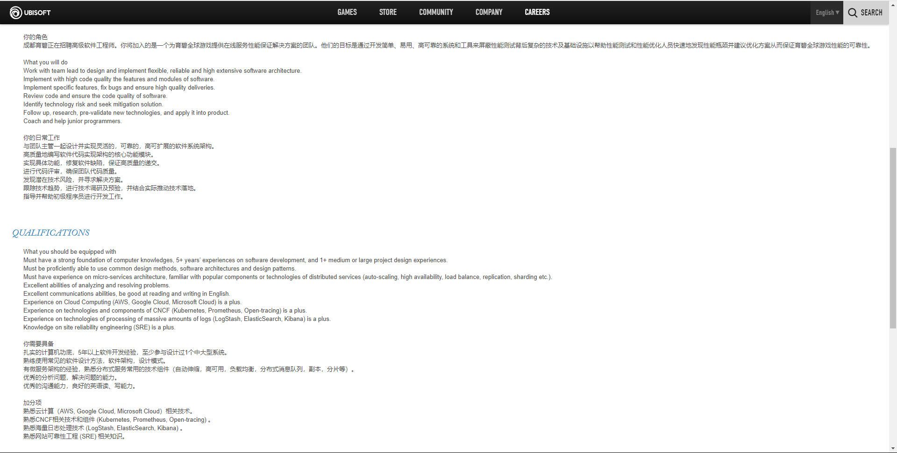

Ideal Job
snapshot:
  linkA description (in your own words) of the position, and particularly what makes this position appeals to you.
This job is responsible for writing the core modules of code and program and finding a more flexible and reliable system architecture. At the same time, users are required to have a high-quality code level to fix the quality problems of programs. At the same time, this position is also responsible for checking the potential risks of the application, which requires users to have a high level of code and the ability to be familiar with multiple programming languages.
A description (in your own words) of the skills, qualifications and experience required for the position.
This position requires the candidate to have more than 5 years of development experience, which means that you should at least accept the industry and have participated in a large project and have solid code skills and critical power. It requires you to have good communication skills, you must help others fix problems, and you must be able to find problems, which is really the most difficult. Also need to have a very strong logical ability and understanding of various programming languages and algorithms and architectures.
The most attractive thing about this position is that he can write a core code and help others fix other people's code errors. And through the work of this position can learn to analyze and solve problems.
A description (in your own words) of the skills, qualifications and experience you currently have.
At present, I do not have more than five years of programming experience, I only have two years. Moreover, I have not participated in large and medium-sized projects, and my proficiency in code is far from enough. I cannot find architectural errors and improve from an imperfect one. Let alone more difficult to improve the quality of the code.
A plan describing how you will obtain the skills, qualifications and experience required for the position, building on those you have now. This need not be greatly detailed, (and will probably change significantly over time anyway), but try to be as specific as you can.
At present, I don't have any work in IT industry, so I think what I need most is to improve my code level, learn various logic and programming structures, and find some jobs about it industry, such as writing some simple programs, joining a small project, and starting to slowly contact and enter the programming world. Then continue to participate in medium-sized projects, as well as larger projects, to play a more important role. In the process of continuous learning, constantly improve their code ability, in order to improve themselves to meet the requirements of this position.